40 سؤال
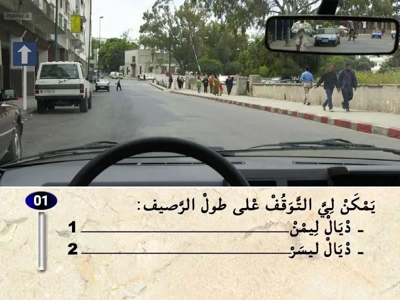
الجواب الصحيح: 2
الطّريق ذات إتّجاه واحد وهذا واضح من الإشارة الطّرقية الموجودة على اليسار وهي تعني على أن الطّريق ذات إتّجاه واحد، والقاعدة تقول أنه عندما تكون الطّريق ذات إتّجاه واحد فيمكننا التوقّف أو الوقوف على يمين أو على يسار الطّريق. لكن في هذه الحالة لا يمكننا التوقّف على طول الرّصيف على الجهة اليمنى لأنه يوجد رصيف مصبوغ باللون الأبيض والأحمر، لذلك يمكننا فقط التوقّف على الجهة اليسرى.
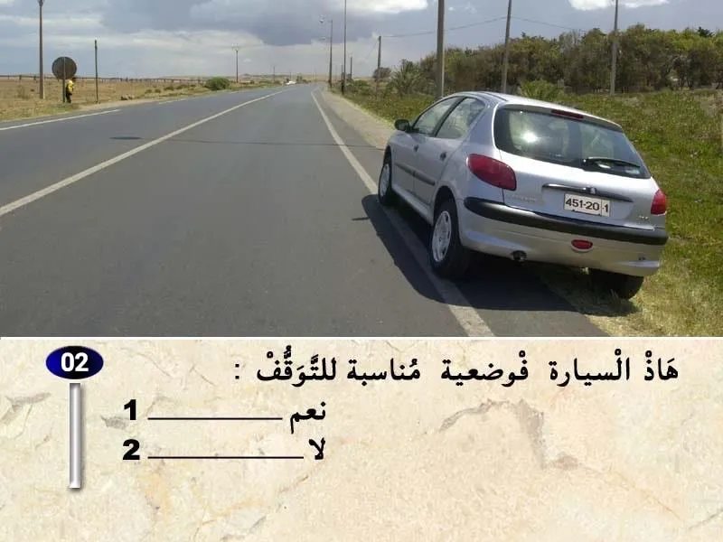
الجواب الصحيح: 2
هذه السيارة فهي في وضعية غير مناسبة للتوقّف، لأنه كما نرى في الصورة فإن السيارة ليست متوقّفة على حاشية الطّريق مازالت العجلات داخل الطّريق، يجب عليها التوقّف خارج الطّريق أي التوقّف على حاشية الطريق بشكل كامل وليس فقط النصف على حاشية الطّريق ونصف السيارة الاخر داخل الطّريق، هذه الوضعية تشكل خطر، لذلك فإن وضعية هذه السيّارة فهي غير مناسبة للتوقّف.
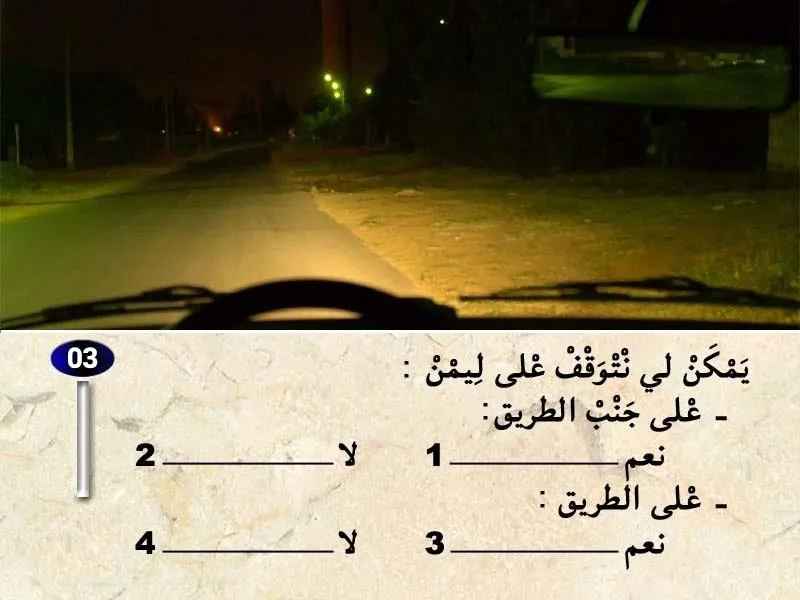
الجواب الصحيح: 1 و 4
بالنسبة لمصطلح جنب الطريق فهو معناه حاشية الطريق أي المكان الموجود خارج الطريق، وبالنسبة لمصطلح على الطريق فهو يعني داخل الطريق أي وسط الطريق التي نمشي فوقها في السير العادي. لذلك في هذه الحالة فيمكن التوقّف على جنب الطريق (أي على حاشية الطريق) لكن لا يمكننا التوقّف على الطريق.
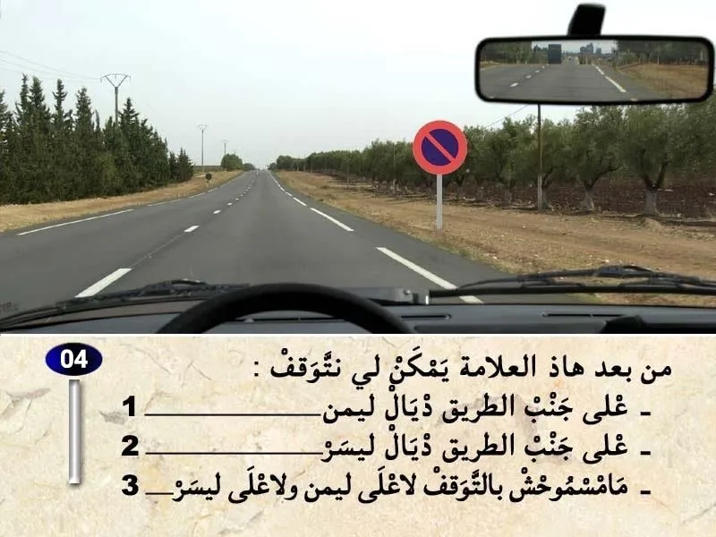
الجواب الصحيح: 3
العلامة الطّرقية تعني أنه ممنوع التوقّف على الطريق وعلى جنب الطريق على الجهة اليمنى (جنب الطريق يعني حاشية الطريق)، بالنسبة للجهة اليسرى فهي أيظا غير مسموح التوقّف فيها لأن الخطوط على الجهة اليسرى متقطعة وهي تعني على أن الطريق ذات إتجاهين (توجد عربات تسير في الإتجاه المعاكس) وعندما تكون الطريق ذات إتجاهين فممنوع علينا منعا كلّيا التوقّف على الجهة اليسرى. لذلك في هذه الحالة فإنه غير مسموح بالتوقّف على الجهة اليمنى وغير مسموح بالتوقّف على الجهة اليسرى.
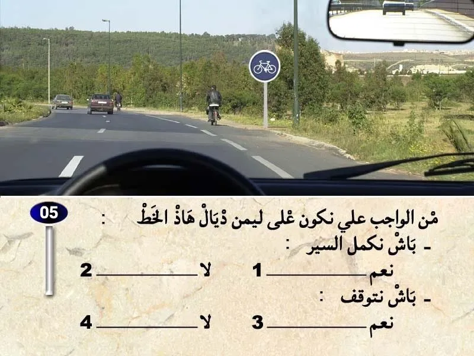
الجواب الصحيح: 2 و 4
بالنسبة للعلامة الطرقية فهي تعني على أن الممر المتواجد أقصى اليمين فهو خاص بجميع أنواع الدراجات (كما أن العلامة الطّرقية تجبر الدراجات للسير هذا المسلك.) وبما أنه مسلك خاص لصنف معين أي خاص بالدراجات إذن فهو ممنوع على الأصناف الأخرى مثلا السيارات أو الشاحنات. لذلك فلا يمكننا السير في المسلك المتواجد أقصى اليمين لإكمال السير وكذلك لا يمكننا التوقّف فيه.
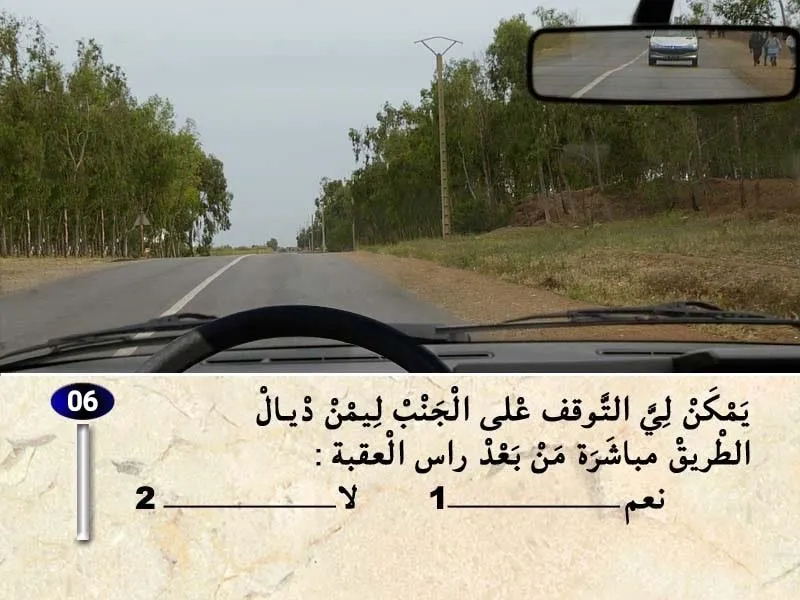
الجواب الصحيح: 2
القاعدة تقول على أنه عندما نكون متواجدين قبل رأس العقبة بمسافة أقل 60 متر فلا يمكن لنا الوقوف والتوقّف، وبعد رأس العقبة مباشرة وعلى مسافة 60 متر فممنوع علينا الوقوف والتوقّف. إذن مباشرة بعد رأس العقبة فلا يمكن لي التوقّف على جنب اليمين للطريق.
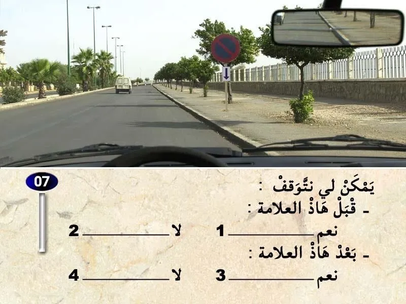
الجواب الصحيح: 2 و 3
العلامة الطّّرقية تعني ممنوع التوقّف (بدون سهم) وهو يطبّق من عند العلامة وينتهي عند ملتقى الطّرق القادم، بما أنه يوجد سهم تكميلي تحت العلامة الطّرقية الخاصة بالمنع من التوقّف فالقاعدة الأولى تلغى لأنه يوجد سهم تكميلي تحت العلامة، الان السهم الذي يتّجه نحو الأسفل فهو يعني أن التوقّف قبل العلامة، والتوقّف بعد العلامة مسموح به. إذن لا يمكنني التوقّف قبل العلامة الطّرقية، لكن بعد العلامة الطّرقية ينتهي المنع ويمكنني التوقّف. (بعض المرّات السهم التكميلي يكون نحو الأعلى، في هذه الحالة التوقّف يكون ممنوع بعد العلامة، عكس هذه الحالة).
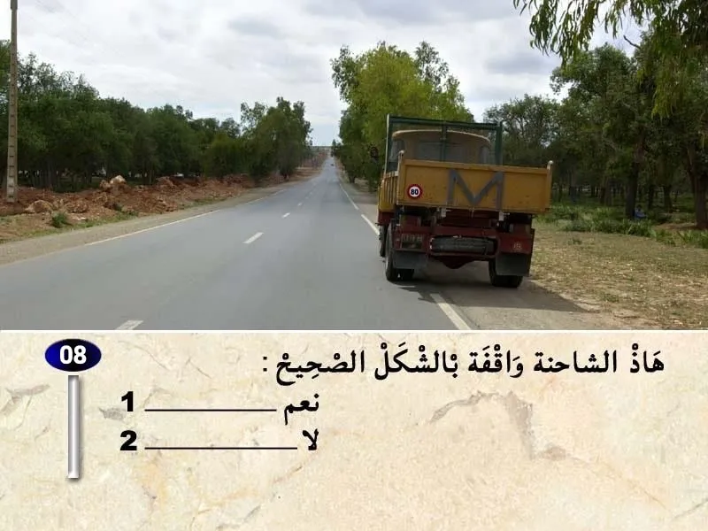
الجواب الصحيح: 2
هذه الشّاحنة فهي في وضعية غير مناسبة للتوقّف، لأنه كما نرى في الصورة فإن الشّاحنة ليست متوقّفة على حاشية الطّريق مازالت العجلات داخل الطّريق، يجب عليها التوقّف خارج الطّريق أي التوقّف على حاشية الطريق بشكل كامل وليس فقط النصف على حاشية الطّريق ونصف الشّاحنة الاخر داخل الطّريق، هذه الوضعية تشكل خطر، لذلك فإن وضعية هذه الشّاحنة فهي غير مناسبة للتوقّف.
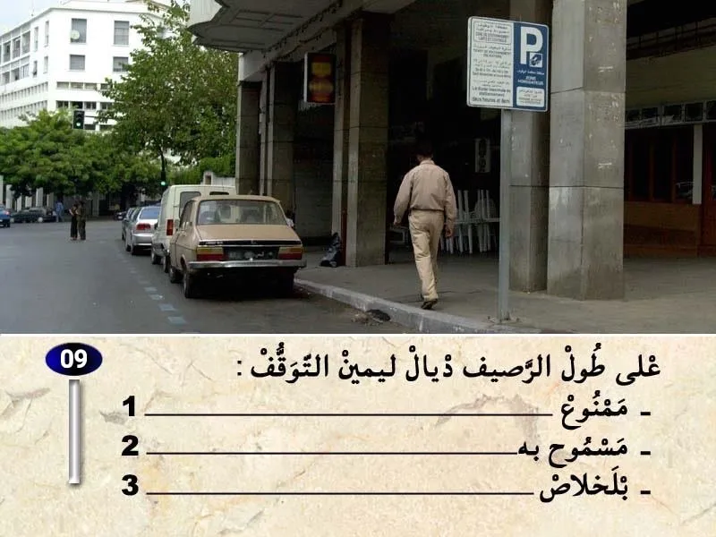
الجواب الصحيح: 2 و 3
على طول الرصيف الأيمن فالتوقّف مسموح به، لأنه لا توجد علامات طرقية تمنعنا من التوقّف، بالنسبة للعلامة الخاصة بالتوقّف فهي تعني أن التوقّف هو بالأداء وليس بالمجّان.
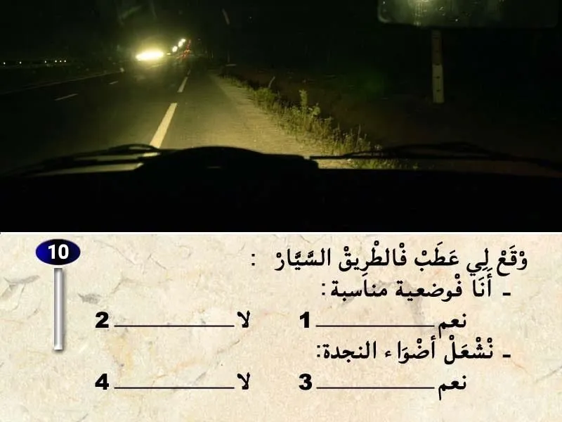
الجواب الصحيح: 1 و 3
نتواجد في طريق سيّار ولقد وقع لي عطب، كما نعلم ففي الطّريق السيّار فيوجد مسلك السير العادي ومسلك الثاني هو خاص بالتجاوز ومسلك ثالث متواجد أقصى اليمين وإسمه شريط التوقّف الإستعجالي (وهو المسلك الذي توجد فيه السيارة في الصورة) وهذا الشريط ممنوع الوقوف والتوقّف فيه إلاّ في الحالات الإستعجالية مثل ما وقع في هذه الحالة وقوع عطب إذن مسموح لي التوقف فيه وأنا في وضعية مناسبة لأنني خارج مسلك السير العادي وأتواجد في شريط التوقّف الإستعجالي، بالنسبة لإستعمال أضواء النجدة فيمكننا إستعمالهم لأنه لدينا عطب ولكي تنتبه السيارات. إذن أنا في وضعية مناسبة وأستعمل أضواء النجدة.
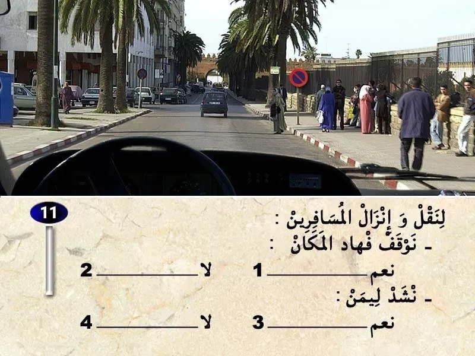
الجواب الصحيح: 2 و 4
يوجد في الأمام لافتة طرقية تبيّن أنه موقف خاص بالحافلات، وفي المواقف الخاصة لا يمكننا الوقوف ولا يمكننا التوقّف كذلك، بالنسبة للسير في أقصى اليمين فلا يمكنني ذلك لأنه يوجد راجل موجود على الطّريق ولو قمت بالسّير في أقصى اليمين سوف أصطدم به. إذن في هذه الحالة لا يمكننا الوقوف في هذا المكان لنقل أو إنزال المسافرين ولا يمكننا السّير أقصى اليمين.
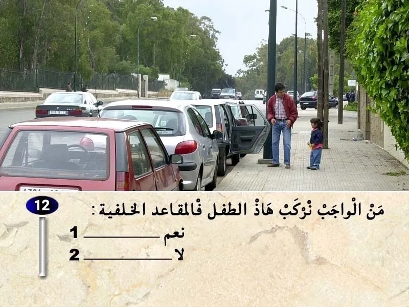
الجواب الصحيح: 1
دائما الأطفال فمكانهم هو في المقاعد الخلفية للسيارة.
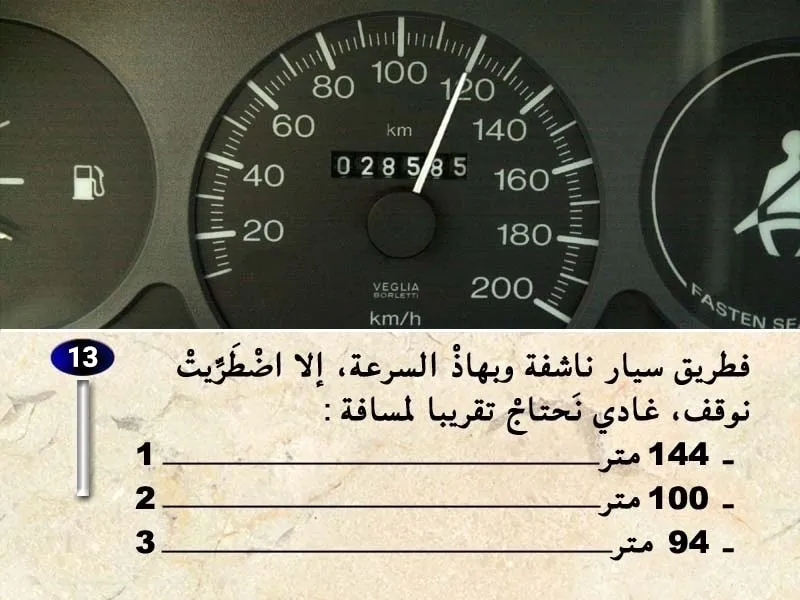
الجواب الصحيح: 1
نحن نسير بسرعة 120 كلم في الساعة، لحساب مسافة الوقوف في هذه الحالة فنقوم بحذف العدد الفردي وضرب ما تبقى من عدد في نفسه، في هذه الحالة سوف نقوم بحذف العدد الفردي والذي هو 0 ويتبقى لنا العدد 12. إذن نضرب العدد 12 في 12 والنتيجة هي 144. إذن نحتاج إلى مسافة 144 متر للوقوف إذا كنت أسير بسرعة 120 كلم في الساعة.
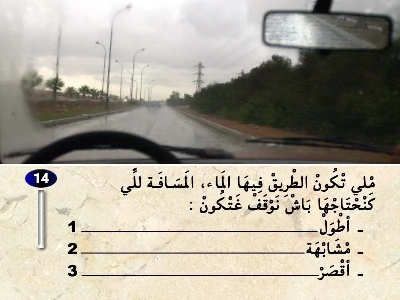
الجواب الصحيح: 1
بالنسبة لمسافة الوقوف في أجواء جوّية صعبة مثلا يوجد مطر على الطّريق أو ثلج فإن هذه المسافة تكون أطول. (مثال: لو كنا نحتاج إلى مسافة وقوف 25 متر للوقوف في طريق ناشفة فإننا نحتاج إلى 50 متر في طريق فيها ماء) لذلك الإجابة الصحيحة هي أطول في ظل هذه الظروف الجوّية.
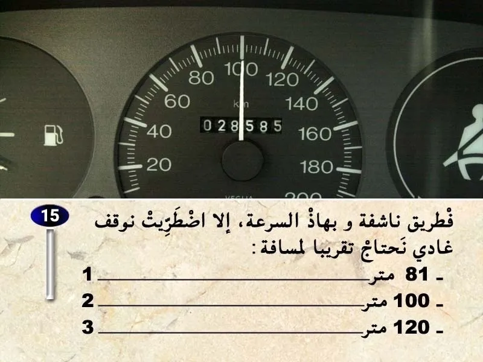
الجواب الصحيح: 2
نسير في طريق ناشفة وبسرعة 100 كلم في الساعة، لحساب مسافة الوقوف في هذه الحالة فنقوم بحذف العدد الفردي وضرب ما تبقى من عدد في نفسه، في هذه الحالة سوف نقوم بحذف العدد الفردي والذي هو 0 ويتبقى لنا العدد 10. إذن نضرب العدد 10 في 10 والنتيجة هي 100. إذن إذا إظطررت للوقوف سوف أحتاج إلى مسافة 100 متر تقريبا للوقوف إذا كنت أسير بسرعة 100 كلم في الساعة.
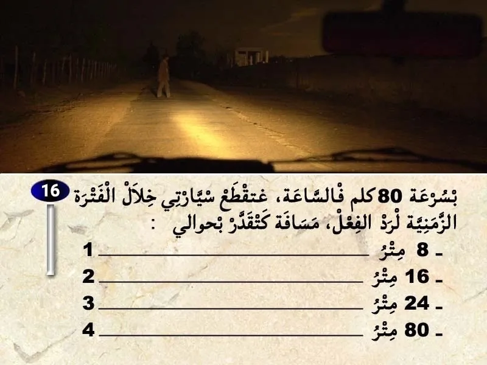
الجواب الصحيح: 3
بالنسبة لحساب المسافة الخاصة بالفترة الزّمنية لرد الفعل (المقدرة بثانية) نقوم بحذف العدد الفردي من السرعة التي نسير بها ونضرب ما تبقى من عدد في العدد 3، إذن في هذه الحالة بما أننا نسير بسرعة 80 كلم في الساعة فسوف نقوم بضرب العدد 8 في 3 والنتيجة هي 24، إذن سوف تقطع السيّارة خلال الفترة الزّمني لرد الفعل مسافة تقدّر بحوالي 24 متر.
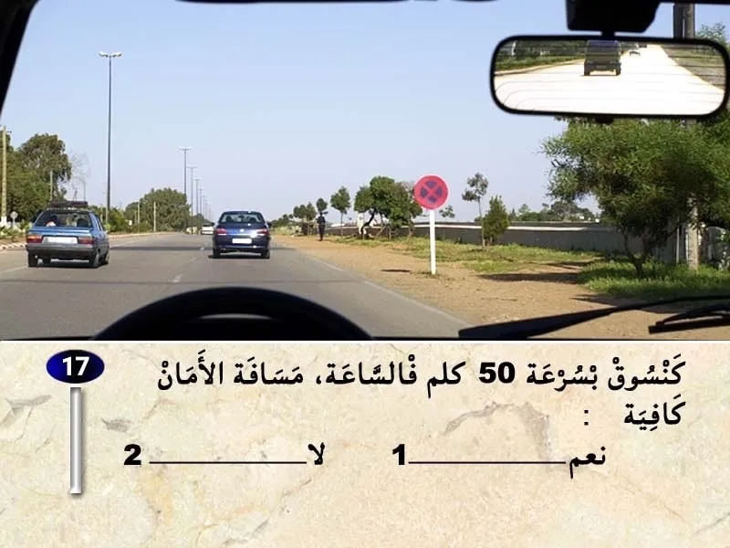
الجواب الصحيح: 1
مسافة الأمان في هذه الحالة نقوم بحذف العدد الفردي الذي هو 0 ونقوم بضرب ما تبقى في العدد 6، في هذه الحالة بما أننا نسير بسرعة 50 كلم في الساعة فسوف نضرب 5 في 6 النتيجة هي 30 متر. إذن كيف أعرف هل هي كافية أم لا؟ نقوم بإستعمال الخطوط التي توجد على اليمين والفراغ الذي بين الخطوط. الخط فيه 20 متر والفراغ الذي يوجد بين الخطوط فيه 6 متر. في الصورة يظهر أن هنالك خط وفراغ وخط إذن تقريبا يوجد بيني وبين العربة التي أمامي 20 متر و 6 امتار و 20 متر إذن تقريبا 46 متر، وأنا بما أنني أسير بسرعة 50 كلم في الساعة وأحتاج إلى 30 متر إذن بما أنه بيني وبين العربة 46 متر إذن هذه المسافة كافية.
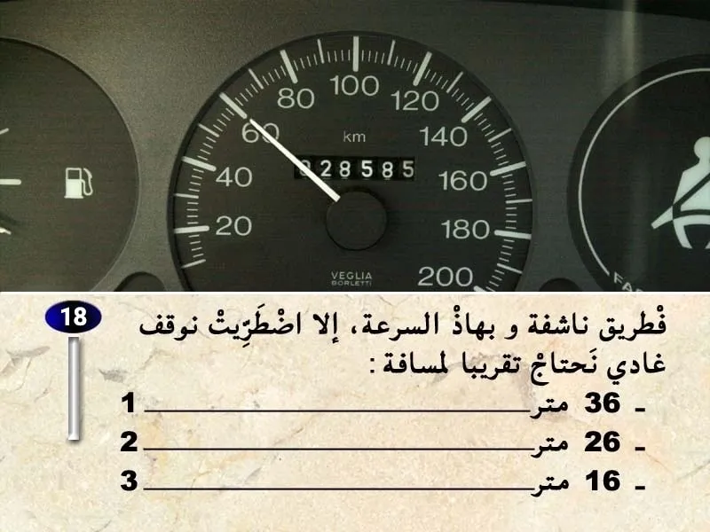
الجواب الصحيح: 1
نسير في طريق ناشفة وبسرعة 60 كلم في الساعة، لحساب مسافة الوقوف في هذه الحالة فنقوم بحذف العدد الفردي وضرب ما تبقى من عدد في نفسه، في هذه الحالة سوف نقوم بحذف العدد الفردي والذي هو 0 ويتبقى لنا العدد 6. إذن نضرب العدد 6 في 6 والنتيجة هي 36. إذن إذا إظطررت للوقوف سوف أحتاج إلى مسافة 36 متر تقريبا للوقوف إذا كنت أسير بسرعة 60 كلم في الساعة.
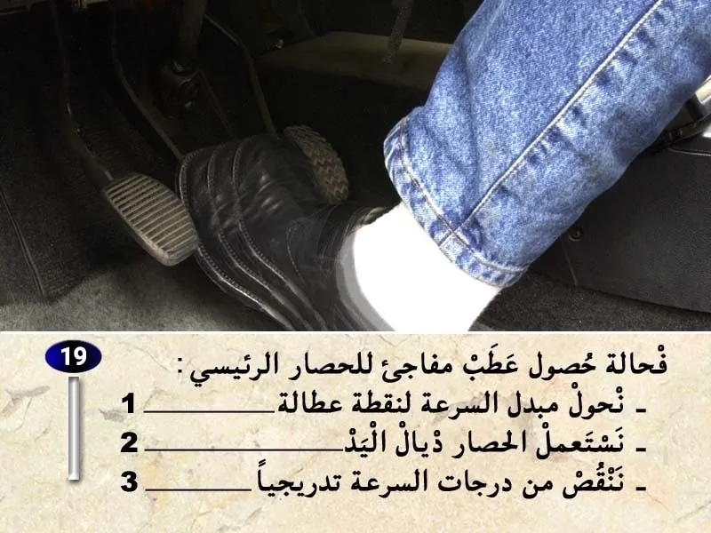
الجواب الصحيح: 2 و 3
بالنسبة لفرامل العربة يوجد لدينا 3، (الحصّار هو الفرامل): لدينا فرامل اليد، وفرامل الرئيسي (نستعمل الأرجل فيه) وثالثا وأخيرا الفرامل عندما نقوم بتغيير مستوى السرعة تدريجيا إلى الصفر (ما يسمى بفرامل المحرّك). في السؤال يقول أنه يوجد عطب مفاجئ للحصار الرئيسي (أي فرامل الأرجل) لم يعد يعمل. في هذه الحالة يجب علينا إستعمال حصار اليد (تدريجيا) وأيظا نقوم بإستعمال علبة السرعة وذلك بإنقاص درجات السرعة تدريجيا إلى غاية المستوى 2. الجواب الصحيح هو رقم 2 و 3.
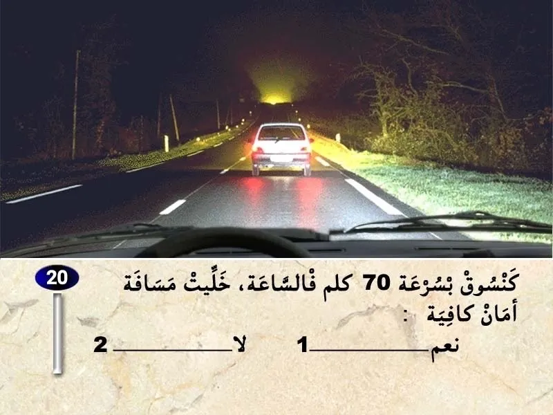
الجواب الصحيح: 2
أسير بسرعة 70 كلم في الساعة، مسافة الأمان في هذه الحالة نقوم بحذف العدد الفردي والذي هو 0 ونقوم بضرب ما تبقى من عدد في 6، إذن 7 في 6 هي 42 متر. في الصورة بيني وبين السيّارة فراغ وفيه 6 أمتار وخط فيه 20 متر المجموع هو 26 (الخط والفراغ من الجهة اليمنى). وأنا أحتاج إلى 42 متر في مسافة الامان. إذن لم أترك مسافة أمان كافية بيني وبين العربة التي أمامي.
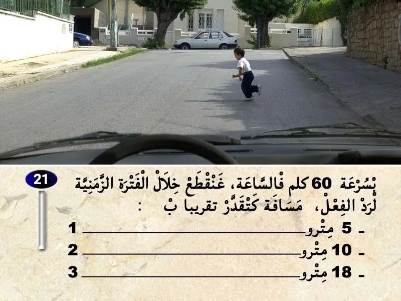
الجواب الصحيح: 3
بالنسبة لحساب المسافة الخاصة بالفترة الزّمنية لرد الفعل (المقدرة بثانية) نقوم بحذف العدد الفردي من السرعة التي نسير بها ونضرب ما تبقى من عدد في العدد 3، إذن في هذه الحالة بما أننا نسير بسرعة 60 كلم في الساعة فسوف نقوم بضرب العدد 6 في 3 والنتيجة هي 18، إذن سوف تقطع السيّارة خلال الفترة الزّمني لرد الفعل مسافة تقدّر بحوالي 18 متر.
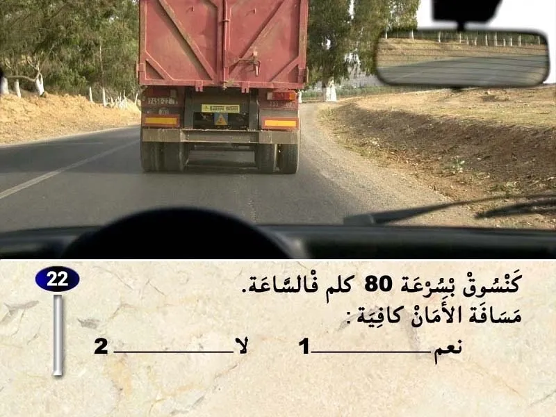
الجواب الصحيح: 2
أسير بسرعة 80 كلم في الساعة، ومسافة الأمان التي أحتاجها هي 8 ضرب 6 النتيجة 48 (نحذف العدد الفردي والذي هو 0 ونضرب ما تبقى من عدد في 6)، يعني يجب أن أترك مسافة أمان تقدّر ب 48 متر، في الصورة واضح جدا أن السيارة قريبة جدا من الشاحنة، مسافة الأمان أصغر بكثير من مسافة الامان التي أحتاجها وهي 48 متر.
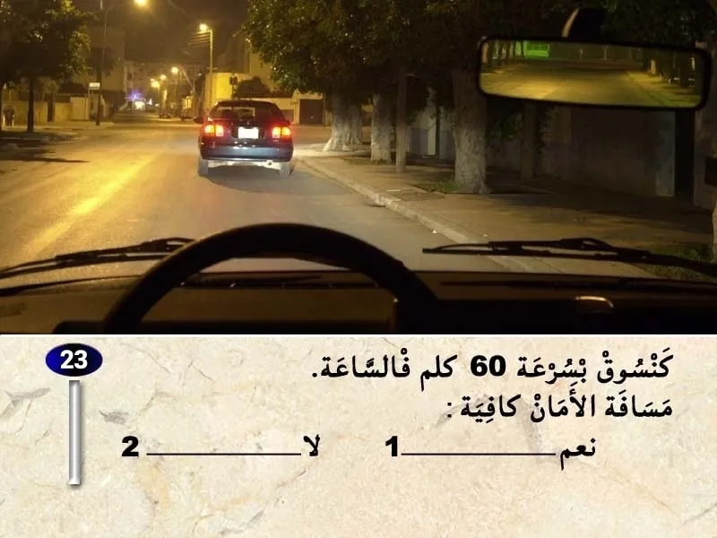
الجواب الصحيح: 2
مسافة الأمان في هذه الحالة نقوم بحذف العدد الفردي الذي هو 0 ونقوم بضرب ما تبقى في العدد 6، في هذه الحالة بما أننا نسير بسرعة 60 كلم في الساعة فسوف نضرب 6 في 6 النتيجة هي 36 متر. داخل المدينة نقوم بإستعمال إمّا الأشجار أو أعمدة الإنارة العمومية لكي نعرف هل مسافة الأمان كافية أم لا. في هذه الحالة توجد أشجار وبين كل شجرة وشجرة يوجد 10 أمتار (بين أعمدة الإنارة يوجد 36 متر). بما انه لا بوجد أعمدة الغنارة سوف نستعمل الأشجار لحساب مسافة الأمان، تقريبا يوجد 2 فراغ بين الأشجار التي تفصل بيني وبني العربة إذن يوجد تقريبا 20 متر وأنا أحتاج مثلما قمنا بالحساب سابقا أننا نحتاج إلى 36 متر. إذن مسافة 20 متر بيني وبين العربة التي أمامي غير كافية.
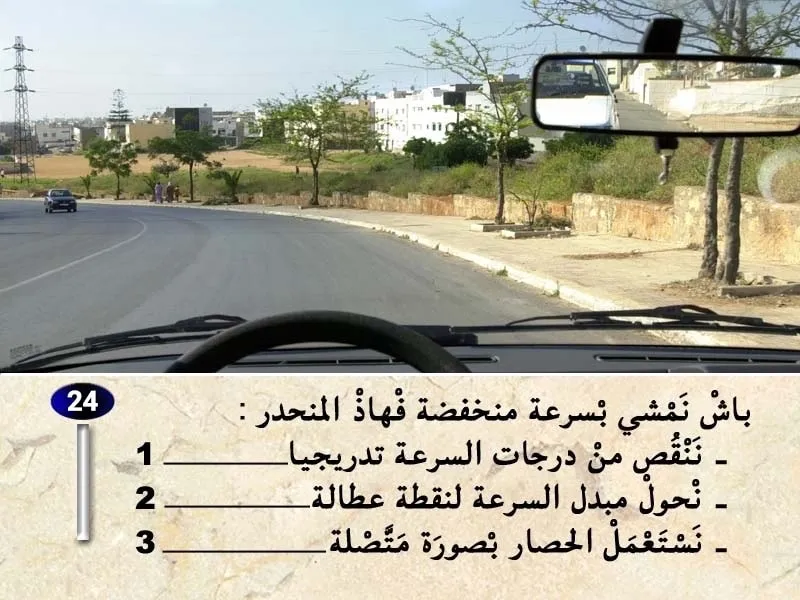
الجواب الصحيح: 1
لكي نسير بسرعة مخفّضة في هذا المنحدر هذا معناه أننا نريد إنقاص الّسرعة، وفي هذه الحالة فإن أفضل طريقة لإنقاص السرعة مع التحكّم بالعربة فهي عن طريق الإنقاص من درجات السرعة تدريجيا، أي نكون في مستوى السرعة مثلا 5 ونغيّره إلى 4 وبعد ذلك إلى المستوى 3 وهكذا لكن بدون الوصول إلى المستوى 1 في الهبطة،، (بالنسبة لتحويل مبدل السرعة لنقطة عطالة فلن نستطيع التحكّم بالسرعة وبالنسبة لإستعمال الحصّار بصورة متصلة فهدا سوف يوقف السيارة بصورة مفاجئة وأيظا توجد سّيارة من الخلف).
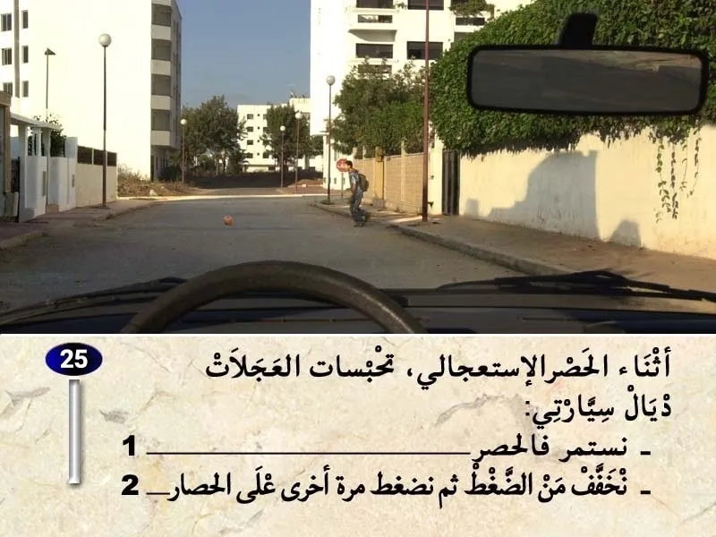
الجواب الصحيح: 2
أثناء الحصر الإستعجالي (يعني فجأة سوف نستعمل الفرامل) العجلات لم تعد تعمل أي أن العجلات تابثة. لذلك بما أنها تابثة ولا تتحرك فإن إستعمال الفرامل بصفة مستمرة هذا قد يؤدي إلى إنزلاق السيّارة وعدم التحكّم بها. لذلك أفضل طريقة هي الضّغط على الفرامل بطريقة متقطّعة، يعني أقوم بالضّغط على الفرامل وأتركها وأضغط على الفرامل وأتركها وهكذا...
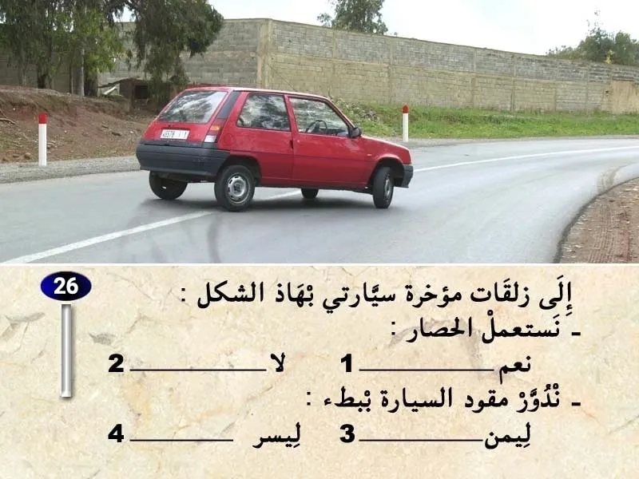
الجواب الصحيح: 2 و 4
إذا إنزلقت العربة لا نقوم بعمل أي شيئ، لا نقوم بإستعمال الفرامل ولا نقوم بزيادة السرعة وما إلى غير ذلك لأن السيارة منزلقة ولا نستطيع التحكّم بها بشكل كامل، لذلك إذا إنزلقت السيّارة هنالك تقنية نقوم بها للتحكم بالسيّارة قليلا وهي أن نلاحظ الإتجاه الذي إنزلقت فيه مؤخرة السيّارة، في الصورة نلاحظ أن مؤخرة السيّارة إنزلقت بإتّجاه الجهة اليسرى إذن نقوم بتحريك مقود السيارة إلى الجهة اليسرى. إذن لا نقوم بإستعمال الحصار ونقوم بتحريك مقود السيّارة إلى الجهة اليسرى.
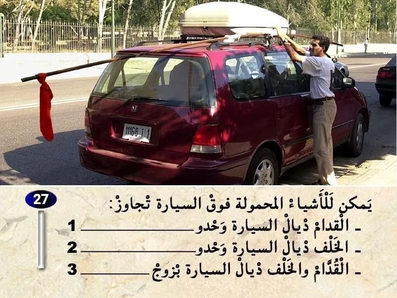
الجواب الصحيح: 2
بالنسبة للأشياء المحمولة فوق السيّارة فيمكن أن تتجاوز خلف السيّارة وحدها (القانون يقول أنه لا يمكن أن تتجاوز الحمولة من خلف السّيارة 3 أمتار)، كما أنه ممنوع أن تتجاوز الأشياء المحمولة فوق السيارة مقدمة السيارة، مسموح فقط من الخلف ولا تتجاوز 3 أمتار.
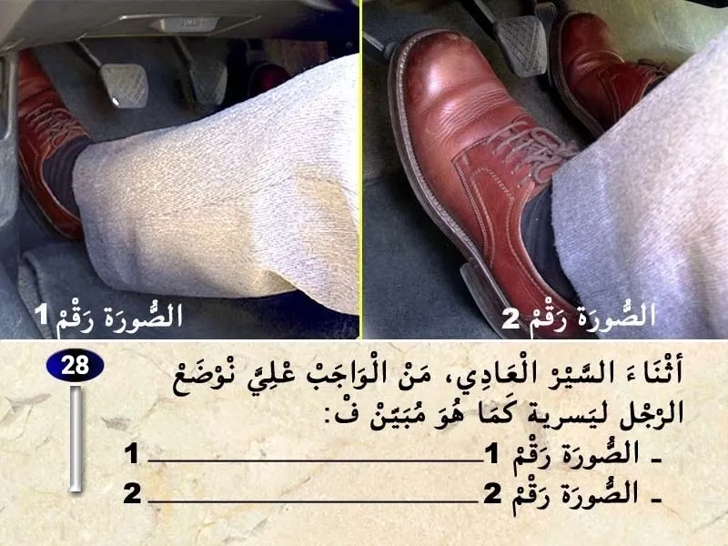
الجواب الصحيح: 1
أثناء السّير العادي نقوم بوضع الرِجل اليسرى مثل الصورة 1، لا يجب وضعها على الواصل (L'embrayage) مثل الصورة 2، أولا لكي لا تتعب الرِجل من وضعها فوق الواصل وثانيا لكي لا يتلف disque الخاص بالسيّارة.
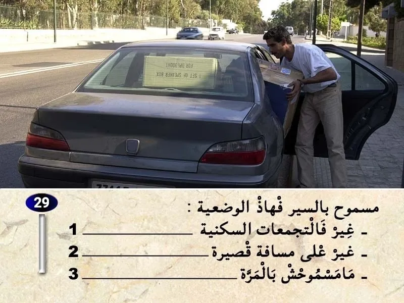
الجواب الصحيح: 3
غير مسموح بالسير في هذه الوضعية، كما توضّح الصورة فيوجد بعض الأشياء خلف السيّارة وهي تمنع وتحجب الرؤية عن السائق من الخلف ولا يمكنه رؤية الطريق والسيارات عند السير. إذن هذه الوضعية غير مسموح بالسير بها مطلقا.
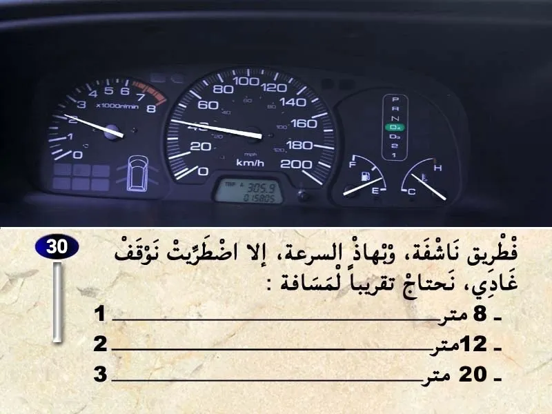
الجواب الصحيح: 3
كنسير فطريق ناشفة وبسرعة 40 كلم فالساعة. باش نحسبو مسافة الوقوف، كنحيدو الصفر من السرعة وكيبقى لينا 4، كنضربو 4 ف 4 والنتيجة هي 16. ولكن حسب التحديث الجديد، ملي كتكون السرعة أقل من 50 كلم فالساعة، خاصنا نزيدو 4 أمتار على النتيجة: 16 زائد 4 كتعطينا 20 متر. إذن مسافة الوقوف بسرعة 40 كلم فالساعة هي تقريباً 20 متر. ورد بالك، زيادة 4 كتطبق غير فالسرعات اللي أقل من 50 كلم فالساعة. إذن الجواب الصحيح هو رقم 3.
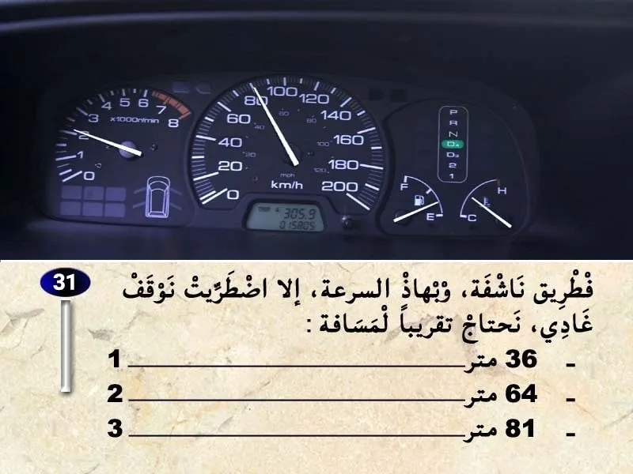
الجواب الصحيح: 2
نسير في طريق ناشفة وبسرعة 80 كلم في الساعة، لحساب مسافة الوقوف في هذه الحالة فنقوم بحذف العدد الفردي وضرب ما تبقى من عدد في نفسه، في هذه الحالة سوف نقوم بحذف العدد الفردي والذي هو 0 ويتبقى لنا العدد 8. إذن نضرب العدد 8 في 8 والنتيجة هي 64. إذن إذا إظطررت للوقوف سوف أحتاج إلى مسافة 64 متر تقريبا للوقوف في طريق سيّار ناشفة إذا كنت أسير بسرعة 80 كلم في الساعة.
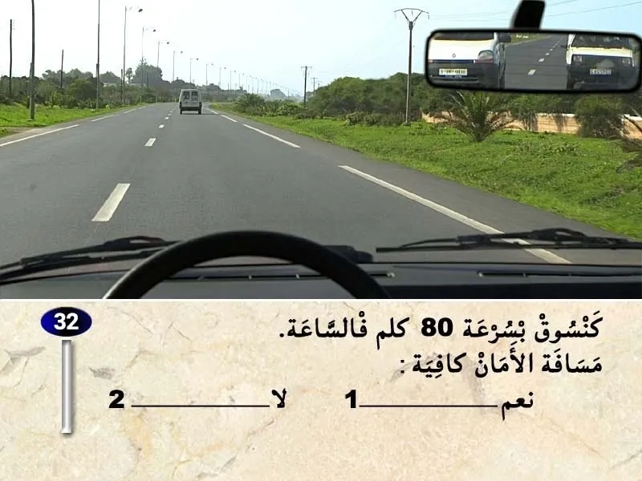
الجواب الصحيح: 1
أسير بسرعة 80 كلم في الساعة، مسافة الأمان في هذه الحالة نقوم بحذف العدد الفردي والذي هو 0 ونقوم بضرب ما تبقى من عدد في 6، إذن 8 في 6 هي 48 متر. في الصورة بيني وبين السيّارة يوجد 3 خطوط وطول كل واحد فيهم 20 متر يعني المجموع 60 متر، بالإظافة لوجود 2 فراغ وطول كل واحد فيهم 6 أمتار يعني 12 متر. إذن المسافة التي بيني وبين العربة التي أمامي تقريبا هي 72 متر. وأنا أحتاج إلى 48 متر في مسافة الامان. إذن مسافة الأمان كافية بيني وبين العربة التي أمامي.
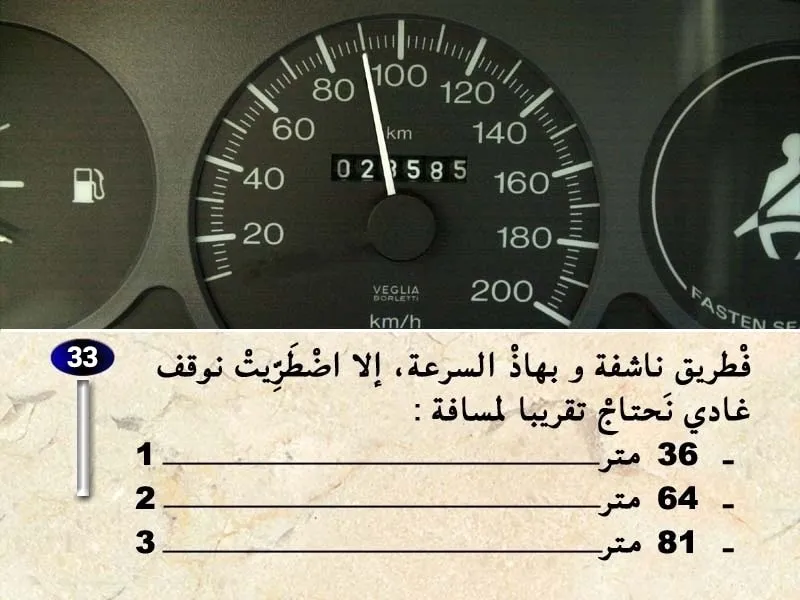
الجواب الصحيح: 3
نسير في طريق ناشفة وبسرعة 90 كلم في الساعة، لحساب مسافة الوقوف في هذه الحالة فنقوم بحذف العدد الفردي وضرب ما تبقى من عدد في نفسه، في هذه الحالة سوف نقوم بحذف العدد الفردي والذي هو 0 ويتبقى لنا العدد 9. إذن نضرب العدد 9 في 9 والنتيجة هي 81. إذن إذا إظطررت للوقوف سوف أحتاج إلى مسافة 81 متر تقريبا للوقوف إذا كنت أسير بسرعة 90 كلم في الساعة.
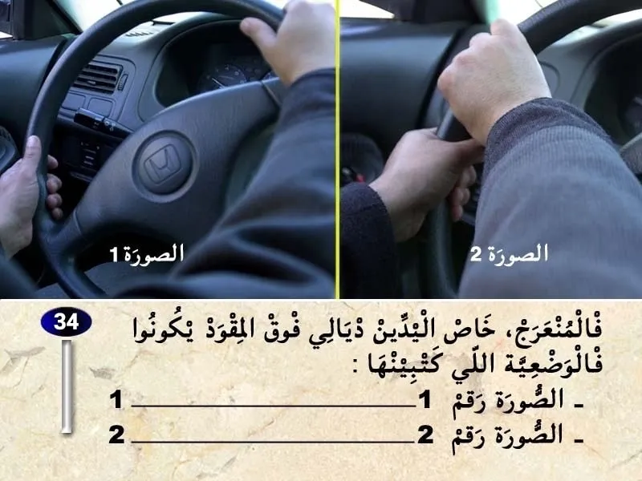
الجواب الصحيح: 1
في المنعرج يجب على اليدين أن يكونا في وضعية مثل الصورة رقم 1، لأن هذه الوضية هي التي نقوم بإستعمالها في أثناء وجودنا في المنعرجات وذلك للتحكم بالمقود وبالعربة بشكل أفضل.
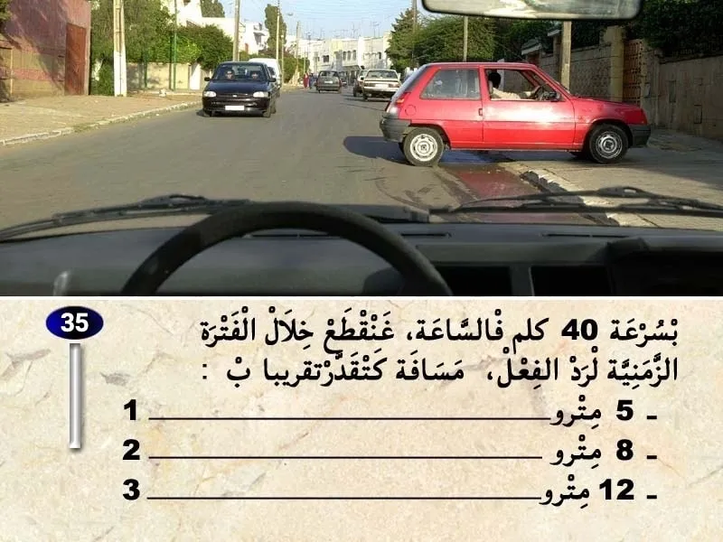
الجواب الصحيح: 3
بالنسبة لحساب المسافة الخاصة بالفترة الزّمنية لرد الفعل (المقدرة بثانية) نقوم بحذف العدد الفردي من السرعة التي نسير بها ونضرب ما تبقى من عدد في العدد 3، إذن في هذه الحالة بما أننا نسير بسرعة 40 كلم في الساعة فسوف نقوم بضرب العدد 4 في 3 والنتيجة هي 12، إذن سوف تقطع السيّارة خلال الفترة الزّمني لرد الفعل مسافة تقدّر بحوالي 12 متر.
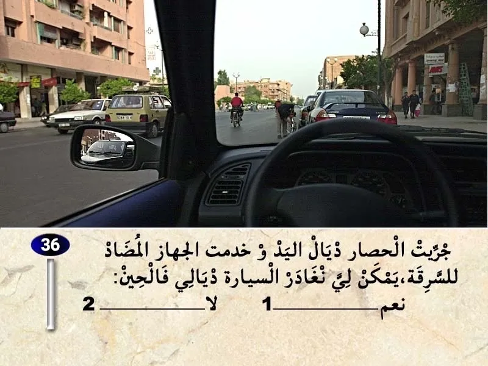
الجواب الصحيح: 2
قبل مغادرة السيّارة قمنا برفع حصار اليد وتشغيل جهاز مضاد السّرقة وهذا شيئ جيّد، لكن الان لا يمكننا الخروج من السّيارة لأنه للخروج من السيّارة نحتاج إلى فتح باب السيّارة وإذا لاحظنا جيدا في المراَة الجانبية اليسرى فنرى أنه توجد سيّارة قادمة من الجانب وقريبة منّا، إذا قمنا بفتح الباب الان والخروج سوف تصطدم بنا السيّارة، لذلك لا يمكننا مغادرة السّيارة في الحين.
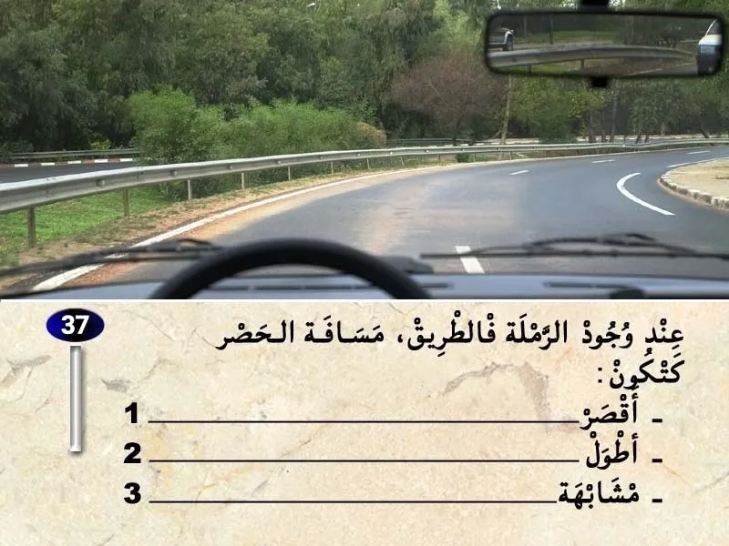
الجواب الصحيح: 2
بطبيعة الحال وجود الرّمل في الطّريق وعندما نقوم بالفرملة فإن مسافة الحصر تكون أطول عكس الحصر في طريق عادية. الإجابة الصحيحة هي رقم 2.
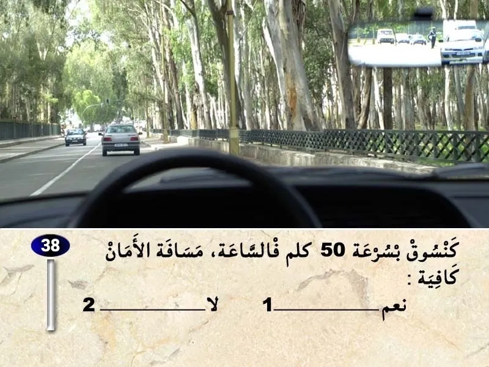
الجواب الصحيح: 2
أسير بسرعة 50 كلم في الساعة، مسافة الأمان في هذه الحالة نقوم بحذف العدد الفردي والذي هو 0 ونقوم بضرب ما تبقى من عدد في 6، إذن 5 في 6 هي 30 متر. في الصورة واضح بشكل جيد أن المسافة التي بيني وبين السيارة التي أمامي قصيرة وأقل من مسافة الأمان 30 متر. لذلك مسافة الأمان غير كافية.
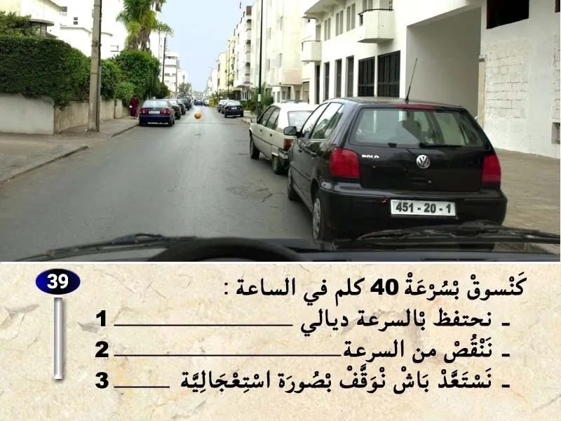
الجواب الصحيح: 2 و 3
كما نلاحظ في الصورة توجد كرة في وسط الطّريق، وهذا يعني أنه يوجد طفل أو أطفال يلعبون في ذلك المكان وهذا يعني أنه يوجد خطر، وفي وجود خطر دائما ما نقوم بالإنقاص من السرعة، ويجب علينا الإستعداد للوقوف بصورة إستعجالية لأنه يوجد إحتمال أن الطفل سوف يتبع الكرة وسط الطريق دون الإنتباه. إذن أنقص من السرعة وأستعد للوقوف بصورة إستعجالية.
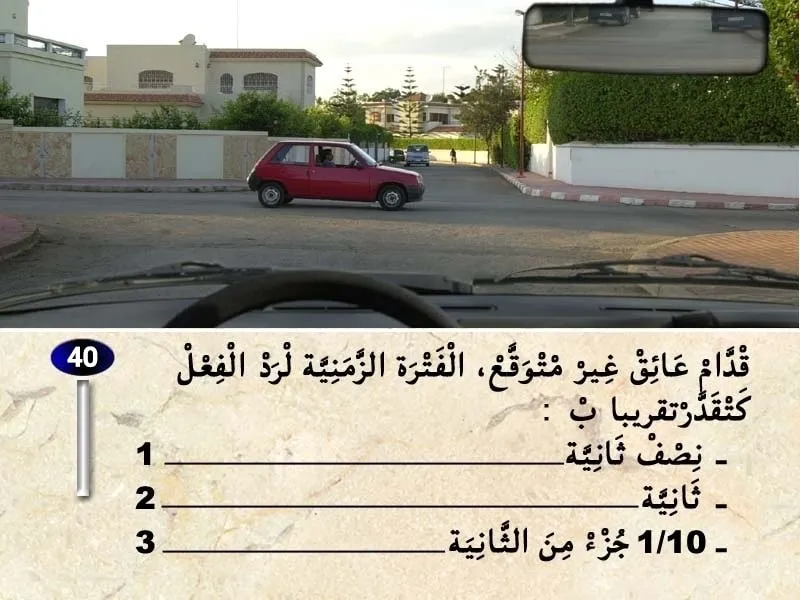
الجواب الصحيح: 2
هذا السؤال هو قاعدة عامة، الفترة الزّمينة لرد الفعل تقدّر تقريبا بثانية واحدة في الظروف العادية. (تكون أكثر إذا كان السائق في حالة سكر أو لديه مشاكل وغيرها من الأسباب التي تجعل من وقت رد الفعل أطول).